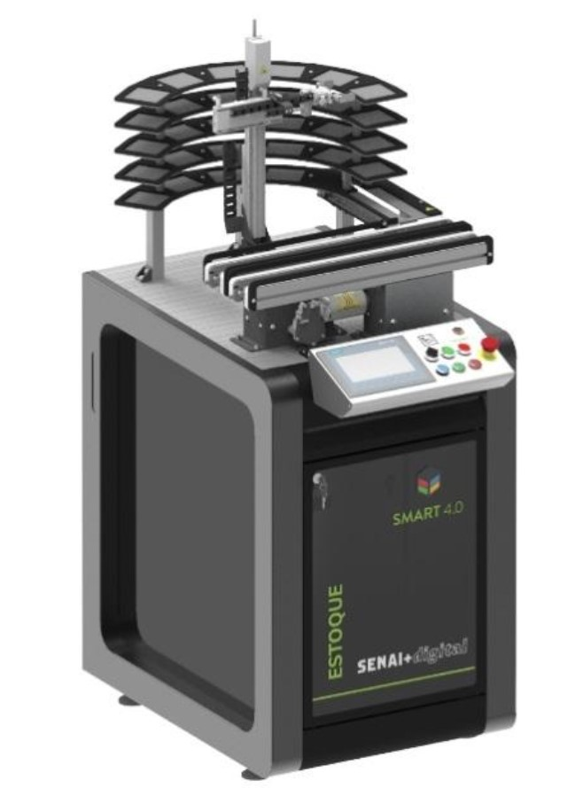

Introdução
Sobre o Projeto
Este site apresenta o estudo da Bancada de Processos SMART 4.0, da linha SENAI+digital. A bancada é uma célula fabril de manufatura discreta que simula uma estação de gravação de lâminas: um manipulador, com movimentos nos eixos X, Y e Z, pega as lâminas por vácuo e as leva até a mesa de gravação, enquanto as esteiras transportam as peças. Todo o conjunto é controlado por um CLP Siemens S7-1200 e operado por uma IHM touchscreen.

O que você encontra aqui
Reunimos os equipamentos da bancada e os conceitos por trás de cada um deles:
- Equipamentos da bancada: os 35 componentes, com o conceito e as aplicações de cada um.
- CLP, IHM e driver de comunicação: como a bancada é controlada, operada e ligada em rede.
- Pneumática, painéis elétricos e sensor Reed Switch: a parte física e elétrica.
- Pirâmide de Automação: onde cada equipamento se encaixa na automação industrial.
- Design Thinking & Scrum e Trello: como o grupo organizou o trabalho.